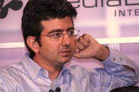
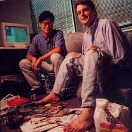
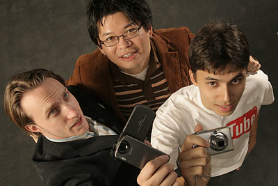
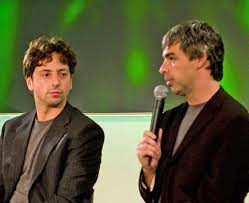

Pierre Omidyar (eBay)
Pierre Morad Omidyar is the French engineer who founded the online marketplace eBay in 1995. eBay brought buyers and sellers together from across the country. In just 5 years, eBay was generating over $10 bn of annual revenue, and today it operates in 25 countries, including China and India. A multi-billionaire, Omidyar now actively promotes independent online journalism.
David Filo and Jerry Yang (Yahoo!)
As electrical engineering graduate students at Stanford, in 1994, David Filo and Jerry Yang launched the website "Jerry and David's guide to the World Wide Web". The site was a human-edited directory of the new and expanding World Wide Web, As its popularity grew, they changed the name to Yahoo!, as an acronym for “Yet Another Hierarchical Officious Oracle” ans incorporated the company in 1995. They integrated a search engine called Yahoo Search, which quickly became the most popular online directory and search engine on the Web. After rejecting a $47 bn takeover offer from Microsoft in 2008, Yahoo! eventually sold itself to Verizon in 2016 for less than $5 bn.
Craig Newmark (Craigslist)
In 1995, Craig Newmark started an email list in San Francisco featuring events and other classified ad content. In 1996, he transformed it into the simple Website Craiglist that quickly exploded in popularity around the country, significantly disrupting newspaper classified advertising. Today the free site offers a huge collection of local ads for everything from collectibles to cars to dating. In 2004, eBay acquired 25% of Craigslist. Newmark spends most of his time today on philanthropic initiatives.
Chad Hurley, Steve Chen, and Jawed Karim (YouTube)
While co-workers at the online financial company PayPal, Chad Hurley, Steve Chen, and Jawed Karim started the video-sharing site YouTube in 2005. By mid-2006, more than 65,000 videos per day were being uploaded to YouTube, with 100 million views per day. Hurley served as YouTube’s CEO. and Chen was Chief Technology Officer. In October 2006, Google acquired YouTube for $1.65 billion in stock.
Jimmy Wales (Wikipedia)
Jimmy Donal Wales worked at a futures trading firm, while coding in his spare time. He used his trading profits to launch an unsuccessful content/search engine, but then turned his attention to creating an online encyclopedia. In 2001, to supplement content creation for the initiative, he and partner Larry Sanger launched Wikipedia, an open-source, collaborative encyclopedia that allowed content contributions from ordinary people. The site’s popularity grew quickly, and today is one of the Internet's most popular sites, hosting over 57 million articles in over 300 languages. Wikipedia operates as a non-profit, and Wales remains on the board of trustees for the Wikimedia Foundation. He also co-founded the for-profit web hosting company Fandom and the social media network WT Social.
Shawn Fanning (Napster)
In 1999, programmer Shawn Fanning developed Napster, a peer-to-peer file-sharing program that allowed users to find and trade music files online. At its peak, the free service had more than 25 million users. Following an avalanche of lawsuits from the music industry and copyright holders, Napster was ordered to shut down in 2001. Napster initiated the digital music revolution, and Fanning later launched a paid version of the site, which was acquired by Rhapsody in 2011.
Mark Zuckerberg (Facebook)
Mark Elliot Zuckerberg launched the social media website Facebook from his dorm room at Harvard in 2004. He soon left college to launch a company and expanded the service to other campuses. The site allowed students to connect with each other, share photos and videos, chat, and join interest groups. Facebook opened the platform to the general public, and with 845 million monthly users, Facebook went public in 2012 at a valuation of $104 billion. Zuckerberg remains CEO of Facebook, which has grown to nearly 3 billion users worldwide.
Larry Page & Sergey Brin (Google)
Lawrence Edward Page and Sergey Mikhaylovich Brin were two Stanford PhD students who started work in a friend's garage attempting to catalog and search the new World Wide Web. They developed an algorithm that analyzed web page relevance, based on the links connecting pages to each other. “Google” initially launched on Stanford’s website (google.stanford.edu) in 1996, and became Google.com in 1997. Their algorithm was superior to existing ones, and Google quickly became the Internet’s most powerful search engine. Google now generates over $60 bn of annual revenue from advertising, cloud computing, software, and hardware sales.
Jeff Bezos (Amazon)

In 1994, entrepreneur Jeff Preston Bezos founded Amazon.com, an online bookstore. With technological innovation and market expansion, Amazon grew into the largest online e-commerce marketplace in the U.S. Amazon continued to expand into e-readers, virtual home assistants and streaming video. Its AWS cloud computing platform has gained a dominant market share and grown into its most profitable segment. Amazon made Bezos one of the richest men in the world, and he has invested some of his wealth in establishing the commercial space company Blue Origin.